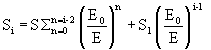

Экономическая оценка перспективности развития направления энергетики
Рассмотрим экономическую эффективность развития некоторого направления в производстве энергии на примере ветроэлектростанции - ветродвигателя с электрогенератором [1, 4, 5] и вспомогательными устройствами.
Для производства электроэнергии приемлемого качества необходима ветроэлектростанция с накопителем энергии (аккумуляторной батареей), соответственно, зарядным устройством и преобразователем DC/AC для подключения к нагрузкам 220 В 50 Гц.
Пусть имеется ветроэлектростанция с выходной мощностью 100 Вт (непрерывной). Она может производить 2.4 квт-час электроэнергии в сутки, 876 квт-час в год, 4380 квт-час за 5 лет, 8760 квт-час за 10 лет. Вряд ли отдельные узлы ветроэлектростанции могут прослужить более 10 лет, например, аккумуляторную батарею наверняка придется заменить. Таким образом, можно определить срок службы ветроэлектростанции в 10 лет, а суммарное количество выработанной энергии принять равным 10000 квт-час.
Какова цена электроэнергии? Пусть ветроэлектростанция не требует обслуживания в течение срока своей службы. Стоимость ветродвигателя с электрогенератором мощностью 100 Вт (непрерывной) составляет около 15000 руб., стоимость аккумуляторной батареи 6СТ-190 примерно 3000 руб., стоимость зарядного устройства около 1000 руб., стоимость преобразователя мощностью 100 Вт около 1500 руб. Таким образом, общая стоимость ветроэлектростанции составит примерно 20000 руб. Эта стоимость может быть уменьшена, но вряд ли существенно. Стоимость электроэнергии составит 2 руб./квт-час (у РАО ЕЭС около 1 руб./квт-час (в 2005 г.)). Причем вышеприведенные оценки являются оптимистическими: цены невысокие, ветер 10 лет дует постоянно, поломок и отказов в течение этого времени нет.
Дальнейшие оценки зависят от того, какова энергетическая составляющая стоимости (цены) изготовления электростанции, т. е. сколько стоит суммарная энергия в общей стоимости электростанции 20000 руб. (по всем технологическим цепочкам).
Рассмотрим на вышеприведенном примере с конкретными цифрами последовательность: вначале делается электростанция G1, затем она производит электроэнергию, которая используется для изготовления электростанции G2. После этого оценивается стоимость электростанции G2 и цена произведенной ею электроэнергии и т. д.
Пусть доля энергии в цене составляет 100 % при начальной стоимости 1 руб./квт-час (т. е. для G1 – 20000 руб. или 20000 квт-час).
Электроэнергия, выработанная G1, стоит 2 руб./квт-час. На производство G2 уйдет 20000 х 2 = 40000 руб. Стоимость энергии G2 будет составлять уже 4 руб./квт-час. Для G3 – 20000 х 4 = 80000 руб. и 8 руб./квт-час, G4 – 160000 руб. и 16 руб./квт-час и т. д. То есть цена выработанной энергии растет бесконечно в геометрической прогрессии, и направление является бесперспективным.
Пусть доля энергии в цене составляет 75 % (т. е. для G1 – 15000 руб. или 15000 квт-час и еще 5000 руб. – дополнительные расходы).
Выработанная G1 электроэнергия стоит 2 руб./квт-час. На производство G2 уйдет 15000 х 2 + 5000 = 35000 руб. Стоимость энергии G2 будет составлять 3.5 руб./квт-час. Для G3 – 15000 х 3.5 + 5000 = 57500 руб. и 5.75 руб./квт-час, G4 – 91250 руб. и 9.125 руб./квт-час и т. д. То есть цена выработанной энергии растет по-прежнему бесконечно и также в геометрической прогрессии, и направление по-прежнему бесперспективно.
Пусть доля энергии в цене составляет 50 % (т. е. для G1 – 10000 руб. или 10000 квт-час и еще 10000 руб. – дополнительные расходы).
Выработанная G1 электроэнергия стоит 2 руб./квт-час. На производство G2 уйдет 10000 х 2 + 10000 = 30000 руб. Стоимость энергии G2 будет составлять 3 руб./квт-час. Для G3 – 10000 х 3 + 10000 = 40000 руб. и 4 руб./квт-час, G4 – 50000 руб. и 5 руб./квт-час и т. д. То есть цена выработанной энергии растет бесконечно, хотя и не так быстро (уже в арифметической прогрессии), но направление по-прежнему остается бесперспективным.
Пусть доля энергии в цене составляет 25 % (т. е. для G1 – 2500 руб. или 2500 квт-час и еще 17500 руб. – дополнительные расходы).
Выработанная G1 электроэнергия стоит 2 руб./квт-час. На производство G2 уйдет 2500 х 2 + 17500 = 22500 руб. Стоимость энергии G2 будет составлять 2.25 руб./квт-час. Для G3 – 2500 х 2.25 + 17500 = 23125 руб. и 2.3125 руб./квт-час, G4 – 23281,25 руб. и 2.328 руб./квт-час и т. д. То есть цена выработанной энергии выходит на некоторый уровень и дальше не растет, направление при этом является перспективным.
Пусть доля энергии в цене составляет 10 % (т. е. для G1 – 1000 руб. или 1000 квт-час и еще 19000 руб. – дополнительные расходы).
Выработанная G1 электроэнергия стоит 2 руб./квт-час. На производство G2 уйдет 1000 х 2 + 19000 = 21000 руб. Стоимость энергии G2 будет составлять 2.1 руб./квт-час. Для G3 – 1000 х 2.1 + 19000 = 21100 руб. и 2.11 руб./квт-час, G4 – 21110 руб. и 2.111 руб./квт-час и т. д. То есть цена выработанной энергии практически сразу же устанавливается на уровне вдвое большем, чем цена исходной энергии, направление при этом является перспективным.
Вышеприведенные расчеты сведены в таблицу (начальная цена электроэнергии 1 руб./квт-час, стоимость изготовления электростанции 20000 руб., суммарное количество электроэнергии, вырабатываемой электростанцией, 10000 квт-час):
Номер электростанции в цепочке |
Цена выработанной электроэнергии, руб. за квт-час, при разных энергетических составляющих стоимости |
||||
10 % |
25 % |
50 % |
75 % |
100 % |
|
G1 |
2 |
2 |
2 |
2 |
2 |
G2 |
2.1 |
2.25 |
3 |
3.5 |
4 |
G3 |
2.11 |
2.3125 |
4 |
5.75 |
8 |
G4 |
2.111 |
2.328 |
5 |
9.125 |
16 |
Вывод о перспективности (да/нет) |
да |
да |
нет |
нет |
нет |
Точкой бифуркации является доля энергии в цене производства электростанции 50 %, то есть электростанция должна производить энергии больше, чем ушло на производство материалов и работ по ее изготовлению. Добиться этого можно, лишь увеличивая необслуживаемый срок работы электростанции, так как уменьшить ее цену и изменить технологию производства материалов вряд ли возможно.
Если доля энергии в цене электростанции составляет 100 %, то о перспективности направления можно говорить вообще лишь в том случае, если цена произведенной ею энергии будет меньше, чем цена энергии РАО ЕЭС (или энергии, послужившей отправной точкой развития направления). Это можно считать в данном случае обобщенным критерием, независимо от остальных характеристик электростанции.
Если доля энергии меньше 100 %, то цена энергии, производимой с помощью электростанции, может быть в соответствующей степени больше, чем та, на основе которой начато развитие направления.
По сути, мы имеем дело с законом сохранения энергии в экономическом пространстве.
Пусть имеется последовательность электростанций G1, G2, …, Gi, …, каждая из которых способна произвести количество электроэнергии E. Стоимость изготовления (цена) i-й электростанции Si. Энергетическая составляющая стоимости первой электростанции eS1 (e – энергетическая составляющая цены в процентах):
eS1 = С0 E0
S1 = S + eS1 = С0 E0 + S
где C0 – цена энергии при изготовлении первой электростанции G1, E0 - количество энергии, которое необходимо потратить на изготовление электростанции и S – дополнительные расходы (будем считать E0 и S постоянными в последовательности G1, G2, …, Gi, …).
Отсюда E0 = eS1/C0
Цена C1 электроэнергии , выработанной электростанцией G1 в количестве, равном E, будет равна:
С1 = S1/E
Стоимость изготовления второй электростанции G2:
S2 = S + С1 E0 = S + S1 (E0/E)
Цена ее электроэнергии:
C2 = S2/E
Стоимость изготовления третьей электростанции G3:
S3 = S + C2 E0 = S + S2 (E0/E) = S + S (E0/E) + S1 (E0/E)2
Цена ее электроэнергии:
C3 = S3/E
Стоимость изготовления четвертой электростанции G4:
S4 = S + C3 E0 = S + S3 (E0/E) = S + S (E0/E) + S (E0/E)2 + S1 (E0/E)3
Цена ее электроэнергии:
C4 = S4/E
Стоимость изготовления i-й электростанции Gi:
Si = S + Ci-1 E0 = S + Si-1 (E0/E) = S + S (E0/E) + S (E0/E)2 + … + S (E0/E)i-2 + S1 (E0/E)i-1
Или

О перспективности производства электроэнергии с помощью ветроэлектростанций в промышленных масштабах с прицелом на замену других источников, считающихся экологически вредными (АЭС, ГЭС, ТЭЦ), можно говорить лишь в том случае, если E0/E < 1, то есть электростанция производит больше энергии, чем тратится на ее изготовление.
Поскольку E0/E = eC1/C0, то имеем условие:
eC1/C0 < 1
где C1 – цена электроэнергии, производимая первым поколением электростанций G1, C0 – цена энергии, на основе которой разрабатывается направление, e – энергетическая составляющая цены производства в процентах.
Дать реальную оценку энергетической составляющей в цене изготовления ветроэлектростанции достаточно сложно. По справочным данным на территории Канады она составляет примерно 30 %. Автор склоняется к оценке в 100 %, так как, во-первых, существующие методики расчета иногда не учитывают некоторых расходов (например, оплата труда в ряде случаев не считается в энергетической составляющей, хотя на производство продовольствия, одежды, жилищ, развлечений энергия расходуется), а, во-вторых, само существование современного индустриального мира полностью определяется наличием энергетического производства. Компромиссной величиной может быть 50 %. Тогда цена производства электроэнергии первым поколением электростанций G1 не должна превышать 3.3C0 в соответствии со справочными данными для Канады, 2C0 по компромиссному варианту и C0, по мнению автора, в противном случае эти электростанции будут паразитической ветвью источников энергии, спекулятивное существование которых обусловлено наличием других, более дешевых источников. Единственным предназначением таких электростанций может быть вспомогательная роль в производстве энергии, например, в экспедициях, для питания различных маломощных устройств: датчиков, коммуникаторов, магистральных усилителей и т. п.
Оценка перспективности развития произведена для случая ветроэнергетики, но вполне подходит и для других направлений.
Ссылки:
25.11.2005
17.06.2010
Альтернативные источники энергии
Компьютеры и
Интернет
Магнитные поля
Механотронные системы
Перспективные
разработки
Электроника и
технология